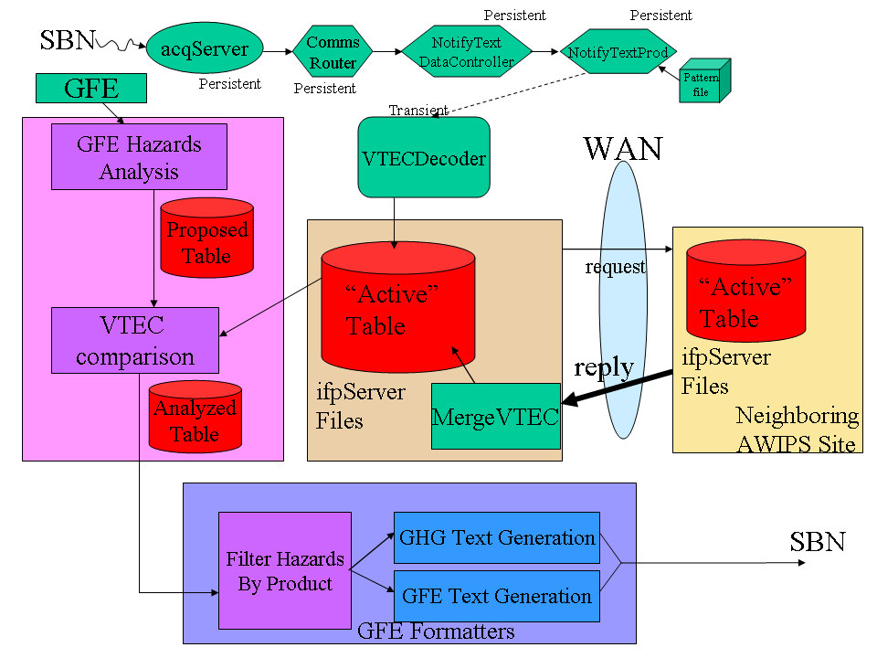
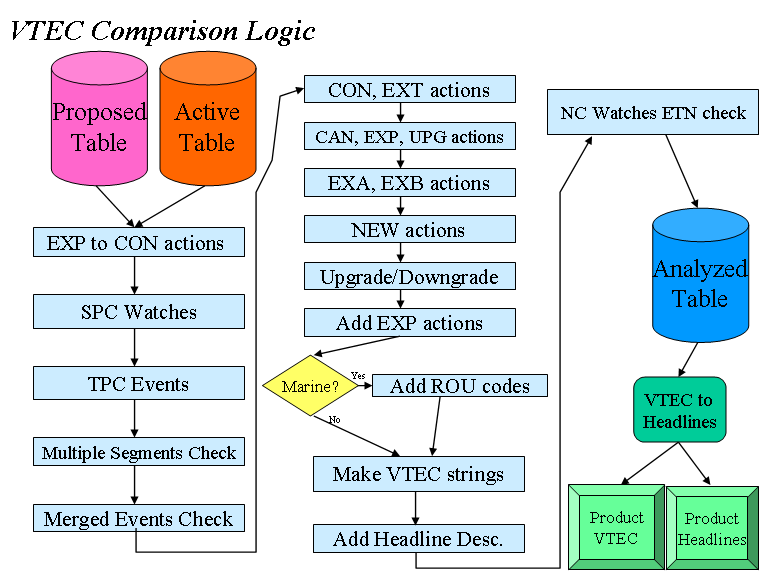

Table of Contents
Overview
VTEC Program Flow
Enabling VTEC in GFE Text Products
VTEC Decoder
AWIPS D2D Setup for GFESuite VTEC
Synchronization of the Active
Table from Backup Sites
Debugging/Examining the Active, Proposed,
and Analyzed Tables
Editing the Active Table
Special GFE Startup for VTEC Testing/Practice
Important Log Files
VTEC Codes and Upgrade/Downgrade Tables
Overview
This document describes the configuration and program flow of VTEC
through the GFE.
VTEC Program Flow
The following diagram shows the VTEC program flow through the
GFE. It consists of three major parts: VTEC Decoding, VTEC
Merging, and Product Formatting.
VTEC Decoding
Text bulletins containing VTEC codes
are received over the AWIPS SBN. These are routed to the
NotifyTextProd AWIPS D2D persistent process. The NotifyTextProd
compares the incoming product against the routing table contained in
the pattern file. The pattern file is used to determine the
process to be run for that file. The pattern file used in
the GFESuite/VTEC situation instructs the NotifyTextProd to start the
VTECDecoder anytime a W* (all warnings) or FZ* (all routine marine
products) arrives.
The VTECDecoder reads the text product, decodes the UGC strings and the
VTEC strings. It then merges its findings with the "Active"
table. The "Active" table represents the currently active (or
recently active) watches, warnings, and advisories. It tracks
Event Tracking Numbers (etns) by geographical id (UGC code) and knows
the current state of each VTEC through action codes (e.g., NEW, CAN,
UPG, EXT) for each product.
There is a special WOU product that is received as guidance from the
Storm Prediction Center (SPC). These products, when
decoded, will send an alert message to the GFE (using sendGfeMessage)
informing the forecaster to run the PlotSPCWatches tool. This
allows the latest SPC guidance to be placed into the Hazards grids,
where it can further edited by the forecaster. Likewise, the Tropical
Prediction Center (TPC) sends out TCV tropical event bulletins, which
when decoded, sends an alert message to the GFE informing the
forecaster to run the PlotTPCEvents tool. This allows the latest
TPC guidance to be placed into the Hazards grid.
The "Active" table is designed to be "locked" when writing.
Only the VTECDecoder and MergeVTEC processes lock the table during
their update cycle. Any client can read the table if the
table is not locked for writing.

VTEC Merging - NOT COMPLETE
It is important that the "Active" table be always
up-to-date. In the outside chance that a warning product is
missed on the SBN, EDEX asks surrounding sites for their
"Active" table on a routine basis. This is sent out as a
request via the WAN. The adjacent site, upon receiving the
request, packages the Active table for transmission back to the
requesting site. The requesting site receives the table and
runs the MergeVTEC routine. The MergeVTEC routine will add/update
any records that are newer in the received active table than the
existing active table. If a warning was issued and the action
code or etn was updated but the local site missed the text bulletin
(perhaps during a reboot), the MergeVTEC will update the warning record
in the local table. The configuration file VTECPartners is
critical in this process since it defines the adjacent sites from which
to get the active table, as well as the site filtering for the
VTECDecoder.
Product Formatting
When a GFE Text Product is run, it first analyzes the GFE Hazards
weather element. The Hazards grid contains areas of VTEC
phenomena and significance, such as WS.W for Winter Storm
Warning. The Hazards grid contains the "Proposed" set of
hazards. This is summed into a "Proposed" table. The
"Active" table is retrieved through EDEX and the VTEC
Comparison module analyzes the proposed and active table and derives
the "Analyzed table". The "Analyzed" table contains all of
the proper VTEC action strings and event tracking numbers based on the
VTEC Comparison logic. For example, if there is a hazard in the
active table but not in the proposed table, generally a "CAN" for
cancel is generated. If there is a new hazard in the
proposed table but not a matching one in the active table, then a "NEW"
is issued. If the logic detects that the user has proposed a
larger area or a longer time for an existing hazard, then the
appropriate EXT, EXA, or EXB action codes are generated.
After the Analyzed table is complete, the hazards are filtered by
product, since not all products contain the same hazards.
The GFE and GHG Text Generation modules create the output
product. There is a fine line between the GFE and GHG text
generation portion of GFESuite. They both use the GFE text
formatter infrastructure. The GFE text formatters are for routine
forecast products and the GHG text formatters are for the watch,
warning, and advisory products.
The Hazard weather element uses the auxiliary data field capability of
Discrete data. The auxiliary data field is only used in two cases with
Hazards. For convective watches (Tornado Watches and Severe
Thunderstorm
Watches), the Storm Prediction Center's (SPC) Event Tracking Number
is carried into the auxiliary data field. This is used by the VTEC
logic to determine which watch (or watches) is depicted in the grids.
The second use for the auxiliary data field is for GHG-style warning
products. It is used to define a segment number for multi-segmented
products.
The following diagram illustrates the VTEC logic that is used to
take the proposed and active tables and generate the analyzed table.

The result of all of this logic is an Analyzed Table, which contains
a listing of all hazards and their VTEC codes. The product
formatters then take the information in the Analyzed Table and inserts
VTEC codes and headlines into the various text products.
Enabling VTEC in GFE Text Products
VTEC can be in one of five modes:
- Disabled
- Operational ("O")
- Test ("T")
- Experimental ("E")
- Experimental VTEC in an Operational Product ("X")
The mode is controlled by a single file contained in the
/awips2/cave/etc/gfe/userPython/textUtilities/regular
directory called VTECMessageType.py (which can be overridden
at
the SITE level if necessary). The product
category, e.g., WSW, should be placed in the file and the VTEC mode
indicated by
one of the acceptable letters: "O", "T", "E", "X". If a product
category is not in this file, then VTEC is not enabled for that product.
IMPORTANT: The file in BASE should
not be modified. Instead the following technique should be
followed.
- Open the localization perspective and browse to the GFE->TextUtilities.
- Open the BASE level VTECMessageType.py.
- Comment in or out the appropriate lines in the file to
enable/disable VTEC. Change the message type as appropriate
to one of the allowable codes: O, T, E, or X.
- Use the File->Save As option to save the file as SITE, and exit the
Python editor. Exit the Localization perspective.
The default provided VTECMessageType enables "O" operational VTEC
for all
products except for the MWS, where VTEC is still experimental "X".
The VTECMessageType file looks like this:
#
----------------------------------------------------------------------------
# This software is in the public
domain, furnished "as is", without technical
# support, and with no warranty,
express or implied, as to its usefulness for
# any purpose.
#
# VTECMessageType.py
#
# This module stores the VTEC
message type for each product category
#
# Author: lefebvre
#
----------------------------------------------------------------------------
#Products not listed will be
considered VTEC disabled.
VTECMessageTypeDict = {
'CWF' : 'O',
'NSH' : 'O',
'WSW' : 'O',
'WCN' : 'O',
'NPW' : 'O',
'FFA' : 'O',
'RFW' : 'O',
'CFW' : 'O',
'MWS' : 'X',
}
# This method fetches the message
type for the specified product Category
# If not found, return None.
def
getVTECMessageType(productCategory):
if
VTECMessageTypeDict.has_key(productCategory):
return VTECMessageTypeDict[productCategory]
else:
return None
Commenting in/out the lines in the VTECMessageTypeDict (highlighted in
blue above) will enable/disable VTEC. Changing the values will
change the VTEC code/mode.
There is a close link between VTEC codes and Headlines. Even if VTEC is
disabled for a product, the Hazards output is still
based on VTEC codes and the VTEC comparison logic is still executed.
An additional step involves setting up VTECPartners/localVTECPartners
for proper exchange of VTEC active tables. Refer to Synchronization of the Active Table
from Backup Sites or more information.
VTEC Decoder
The VTEC Decoder is used by GFESuite to decode incoming text bulletins
for UGC and VTEC codes. It is automatically started by the AWIPS
D2D NotifyTextProd process based on the notify pattern table in the
data/acquire directory.
A configuration file, VTECPartners.py and localVTECPartners.py, is used
to define the following entries for the VTEC Decoder:
VTEC_SPC_SITE
|
This entry defines the
four-letter id that identifies the Storm Prediction Center. It is
set to KWNS in the configuration file. Convective watches are
handled differently when they are from the SPC.
|
VTEC_TPC_SITE
|
This entry defines the
four-letter id that identifies the Tropical Prediction Center. It
is set to KNHC in the configuraiton file. TPC provides tropical
VTEC watches and warnings.
|
VTEC_DECODER_SITES
|
This entry defines the set of
WFO identifiers which are used for filtering on incoming text
bulletins. If blank, then no filtering is performed and all
bulletins from all sites will be decoded. There is no need to add
the SPC, TPC, or your own WFO id to this list since they are
automatically
added in the software. Usually you only set up
entries containing the sites for which you perform primary and
secondary backups, and sites that surround your WFO. For example,
if this is site BOU and you
sometimes back up PUB and CYS, then you will specify PKUB and KCYS in
the
list, as well as KGJT, KGLD, and KCYS.
|
VTEC_CAPTURE_TEXT_CATEGORIES
|
Defines the text categories
(pils) that will have their segment text captured and saved as part of
the active table.
|
The VTEC Decoder writes to the "Active Table" via exclusive write
locking. A backup copy of the "Active Table" is made after each
modification. The VTECPartner's VTEC_BACKUP_TABLE_PURGE_TIME
specifies the number of hours in which to keep backup copies.
AWIPS D2D Setup for GFESuite VTEC - NOT UPDATED
The AWIPS NotifyTextProd processes
will look for
/awips/GFESuite/primary/data/acquire/notifyPattern.txt and
/awips/GFESuite/svcbu/data/acquire/notifyPattern.txt. That file
contains routing information for incoming text bulletins based on a WMO
pattern. Example contents of the "open" file is:
#This file is
for NotifyTextProd to start the VTECDecoder whenever certain
#text
bulletins arrive.
^W.*
/awips/GFESuite/primary/data/vtec/spool
/awips/GFESuite/primary/bin/run/VTECDecoder -f <FILEID> -d -w
"<WMOID>"
^FZ.*
/awips/GFESuite/primary/data/vtec/spool
/awips/GFESuite/primary/bin/run/VTECDecoder -f <FILEID> -d -w
"<WMOID>"
^NWUS64.*KWNS
/awips/GFESuite/primary/data/vtec/spool
/awips/GFESuite/primary/bin/run/VTECDecoder -f <FILEID> -d -w
"<WMOID>"
^W.*
/awips/GFESuite/svcbu/data/vtec/spool
/awips/GFESuite/svcbu/bin/run/VTECDecoder -f <FILEID> -d -w
"<WMOID>"
^FZ.*
/awips/GFESuite/svcbu/data/vtec/spool
/awips/GFESuite/svcbu/bin/run/VTECDecoder -f <FILEID> -d -w
"<WMOID>"
^NWUS64.*KWNS
/awips/GFESuite/svcbu/data/vtec/spool
/awips/GFESuite/svcbu/bin/run/VTECDecoder -f <FILEID> -d -w
"<WMOID>"
The
above version is typical for AWIPS versions earlier than
OB6. Starting with OB6, NotifyTextProd will be sent a
custom template based on the configured site identifier. An
example of this template is shown below:
#This file is
for NotifyTextProd to start the VTECDecoder whenever certain
#text
bulletins arrive.
#
#Warnings
^W.*KABQ
/scratch/HEAD/GFESuite/release/data/vtec/spool
/scratch/HEAD/GFESuite/release/bin/run/VTECDecoder -f <FILEID> -d
-w "<WMOID>"
^W.*KAMA
/scratch/HEAD/GFESuite/release/data/vtec/spool
/scratch/HEAD/GFESuite/release/bin/run/VTECDecoder -f <FILEID> -d
-w "<WMOID>"
^W.*KBOU
/scratch/HEAD/GFESuite/release/data/vtec/spool
/scratch/HEAD/GFESuite/release/bin/run/VTECDecoder -f <FILEID> -d
-w "<WMOID>"
^W.*KCYS
/scratch/HEAD/GFESuite/release/data/vtec/spool
/scratch/HEAD/GFESuite/release/bin/run/VTECDecoder -f <FILEID> -d
-w "<WMOID>"
^W.*KDDC
/scratch/HEAD/GFESuite/release/data/vtec/spool
/scratch/HEAD/GFESuite/release/bin/run/VTECDecoder -f <FILEID> -d
-w "<WMOID>"
^W.*KGJT
/scratch/HEAD/GFESuite/release/data/vtec/spool
/scratch/HEAD/GFESuite/release/bin/run/VTECDecoder -f <FILEID> -d
-w "<WMOID>"
^W.*KGLD
/scratch/HEAD/GFESuite/release/data/vtec/spool
/scratch/HEAD/GFESuite/release/bin/run/VTECDecoder -f <FILEID> -d
-w "<WMOID>"
^W.*KLBF
/scratch/HEAD/GFESuite/release/data/vtec/spool
/scratch/HEAD/GFESuite/release/bin/run/VTECDecoder -f <FILEID> -d
-w "<WMOID>"
^W.*KPUB
/scratch/HEAD/GFESuite/release/data/vtec/spool
/scratch/HEAD/GFESuite/release/bin/run/VTECDecoder -f <FILEID> -d
-w "<WMOID>"
^W.*KRIW
/scratch/HEAD/GFESuite/release/data/vtec/spool
/scratch/HEAD/GFESuite/release/bin/run/VTECDecoder -f <FILEID> -d
-w "<WMOID>"
#Marine
^FZ.*KABQ
/scratch/HEAD/GFESuite/release/data/vtec/spool
/scratch/HEAD/GFESuite/release/bin/run/VTECDecoder -f <FILEID> -d
-w "<WMOID>"
^FZ.*KAMA
/scratch/HEAD/GFESuite/release/data/vtec/spool
/scratch/HEAD/GFESuite/release/bin/run/VTECDecoder -f <FILEID> -d
-w "<WMOID>"
^FZ.*KBOU
/scratch/HEAD/GFESuite/release/data/vtec/spool
/scratch/HEAD/GFESuite/release/bin/run/VTECDecoder -f <FILEID> -d
-w "<WMOID>"
^FZ.*KCYS
/scratch/HEAD/GFESuite/release/data/vtec/spool
/scratch/HEAD/GFESuite/release/bin/run/VTECDecoder -f <FILEID> -d
-w "<WMOID>"
^FZ.*KDDC
/scratch/HEAD/GFESuite/release/data/vtec/spool
/scratch/HEAD/GFESuite/release/bin/run/VTECDecoder -f <FILEID> -d
-w "<WMOID>"
^FZ.*KGJT
/scratch/HEAD/GFESuite/release/data/vtec/spool
/scratch/HEAD/GFESuite/release/bin/run/VTECDecoder -f <FILEID> -d
-w "<WMOID>"
^FZ.*KGLD
/scratch/HEAD/GFESuite/release/data/vtec/spool
/scratch/HEAD/GFESuite/release/bin/run/VTECDecoder -f <FILEID> -d
-w "<WMOID>"
^FZ.*KLBF
/scratch/HEAD/GFESuite/release/data/vtec/spool
/scratch/HEAD/GFESuite/release/bin/run/VTECDecoder -f <FILEID> -d
-w "<WMOID>"
^FZ.*KPUB
/scratch/HEAD/GFESuite/release/data/vtec/spool
/scratch/HEAD/GFESuite/release/bin/run/VTECDecoder -f <FILEID> -d
-w "<WMOID>"
^FZ.*KRIW
/scratch/HEAD/GFESuite/release/data/vtec/spool
/scratch/HEAD/GFESuite/release/bin/run/VTECDecoder -f <FILEID> -d
-w "<WMOID>"
#WCL
^NWUS64.*KWNS
/scratch/HEAD/GFESuite/release/data/vtec/spool
/scratch/HEAD/GFESuite/release/bin/run/VTECDecoder -f <FILEID> -d
-w "<WMOID>"
#WOU
^WOUS64.*KWNS
/scratch/HEAD/GFESuite/release/data/vtec/spool
/scratch/HEAD/GFESuite/release/bin/run/VTECDecoder -f <FILEID> -d
-w "<WMOID>"
#TCV
^WTNT8.*KNHC
/scratch/HEAD/GFESuite/release/data/vtec/spool
/scratch/HEAD/GFESuite/release/bin/run/VTECDecoder -f <FILEID> -d
-w "<WMOID>"
The extra filtering becomes possible with OB6, due to the dual
NotifyTextProd processes running.
There is no other setup required for AWIPS to being sending the text
bulletins to GFESuite. However, once you first install IFPS, you
may need to restart the ingest processes on AWIPS so it
will read the routing file. Restarting data ingest is done as
user "fxa" from the stopIngest.dx4 and startIngest.dx4 for dx4 based
ifpServers.
In later versions (OB6+) of AWIPS, there are special
startNotifyTextProd scripts that are available.
IMPORTANT CONFIGURATION: Once your site has installed OB6, you
should add the following to your localConfig file to take advantage of
the extra filtering, but only if you are running IFPS17.6.*.
Versions post IFPS17.6 are automatically configured for the extra
filtering.
serverConfig.AUTO_CONFIGURE_NOTIFYTEXTPROD = 1
Refer to the
Misc.
Configuration Items for serverConfig and
Auto Configuration of
NotifyTextProd in localConfig for additional information.
Synchronization of the
Active Table from Backup Sites - NOT UPDATED
Synchronization of the Active Table from Backup Sites is used to ensure
that your VTEC table is always up-to-date. It comes in
especially handy when you enter service backup and you need the latest
active table. Based on the clock, the ifpServer will make a
request for adjacent site's active table. The remote site(s)
ifpServer will respond with the active table. The merge vtec
process compares records in the received active table against your own
active table. Entries that are newer in the received table will
be merged into your active table.
Merging characteristics are defined by the VTECPartners and
localVTECPartners configuration files. The following entries
control this process:
VTEC_TABLE_REQUEST_SITES
|
Defines the AWIPS 3-letter WFO
identifiers that will be requested to send their active table to you.
|
VTEC_MERGE_SITES
|
Defines the four-letter WFO ids
that will be decoded and merged with your active table during merges.
|
VTEC_REMOTE_TABLE_FETCH_TIME
|
Defines the interval that the
requests will be made for the active table to the
VTEC_TABLE_REQUEST_SITES. The recommended time is no less than 15
minutes and defaults to 60 minutes.
|
VTEC_RESPOND_TO_TABLE_REQUESTS
|
Set to either 1 or 0. If
1, then the ifpServer will respond to requests for the active table to
be sent to the requestor from remote sites.
|
The
VTEC_TABLE_REQUEST_SITES
define the AWIPS 3-letter WFO identifiers that will be requested to
send their active table to you and the VTEC_MERGE_SITES are the sites
that will be decoded and merged into your active table. Normally
this is set up to
include your primary and secondary backup sites, and the sites that
have you as primary and secondary backup.
You will likely want to change the VTEC_TABLE_REQUEST_SITES to only
include two or three sites.
The VTEC_MERGE_SITES is usually correctly set up in the baseline and
includes all sites within your defined grid domain.
The procedure to configure the sharing of the VTEC active table is done
through the
localVTECPartners
file. Refer to the
VTECPartners /
localVTECPartners documentation.
Debugging/Examining the Active,
Proposed, and Analyzed Tables - NOT UPDATED
The key to VTEC is the correct merging of the proposed and active
table. For diagnostics, the logging preferences file may be
edited to turn on the verbose and debug output for the VTECDecoder,
VTEC Merging, and product formatting. The contents of the
analyzed table will be output at each step of the VTEC
comparison. This is quite helpful for debugging.
For formatters, you will want to enable the debugging for
HazardsTable.py. Here is the complete
.../etc/BASE/logPref/runIFPText.logPref file, with the line to
turn on debugging highlighted.
#Process
Src Sink Category
#
File
#-----------------------------------------
all
all file
all = on
all
all file
debug = off
all
all file
verbose = off
all
all
tty all = on
all
all
tty debug = off
all
all
tty verbose = off
all
all collective all = off
all HazardsTable.py
file verbose = on
all HazardsTable.py
tty verbose = on
#Uncomment following line for
debugging purposes
#all
HazardsTable.py all all = on
# Prefixes
all timeStamp =
on # time stamps on
#all processName =
off # process name off
#all processID =
off # process id off
all fileName =
on # filenames wanted
all lineNo =
on # line
numbers wanted
# TEMPORARY FOR DEVELOPMENT
#bug abort = on
For debugging the VTECDecoder, the logPref file is VTECDecoder.logPref
and the added line is:
all
VTECDecoder.py all all = on
For debugging the VTEC Merge routine, the logPref file is
ingestAT.logPref and the added line is:
all
MergeVTEC.py all all = on
The debugging statements output records in the analyzed, active, and
proposed tables in a form similiar to that below. This form shows
most of the field entries in each record:
Vtec:
/T.NEW.KLOX.HW.W.0001.040903T0900Z-040903T1900Z/
Hdln: HIGH
WIND WARNING
Start: Fri
Sep 3 09:00:00 2004 1094202000.0 Action: NEW
End:
Fri Sep 3 19:00:00 2004 1094238000.0
Phen:
HW Sig: W Office: KLOX Etn: 0001
Seg: 0 Key: HW.W
Zone: CAZ051
The following describes the various fields in the analyzed, active, and
proposed tables:
Vtec
|
Contains the actual VTEC string.
The proposed table (from the Hazard grid) does not contain a Vtec
string since it hasn't been calculated at this point. The active
table contains the VTEC string from the text product, and the proposed
table contains the output VTEC string.
|
Hdln
|
The Headline is the descriptive
name for the VTEC phenomena and significance. ??? indicates that
the headline description has not yet been assigned to the record.
|
Start
|
The starting time of the event
is output in a readable form as well as the number of seconds since the
epoch.
|
End
|
The ending time of the event is
output in a readable form as well as the number of seconds since the
epoch.
|
previousStart
|
The previous starting time of
the event is given for events that have been shortened or extended.
|
previousEnd
|
The previous ending time of the
event is given for events that have been shortened or extended.
|
downgradeFrom
|
Contains information about the
event that this event was downgraded from.
|
upgradeTo
|
Contains information about the
event that this event was upgraded to.
|
UFN
|
Until Further Notice flag,
indicates that the ending time is not defined and the event is
continued until a replacement record is decoded.
|
Purge
|
The purge time of the event
is output in a readable form as well as the number of seconds since the
epoch. The purge time is from the date-time group at the end
of the UGC line.
|
Issue
|
The product issuance time of the
event
is output in a readable form as well as the number of seconds since the
epoch. The issue time is from the date-time group on the 1st line
of the product.
|
Action
|
The action code assigned to this
record is shown. ??? indicates that the action code has not
yet been determined.
|
Phen
|
The VTEC Phenomena is
shown. Locally defined hazard keys will not have a
phenomena.
|
Sig
|
The VTEC Significance is
shown. Locally defined hazard keys will not have a significance.
|
Office
|
The Office identifier associated
with this record is shown. It is the 4-letter site id.
|
Etn
|
The assigned event tracking
number for the record is shown. The proposed table normally does
not have an entry, except for convective watches. ???
indicates that the event tracking number has not yet been determined.
|
Seg
|
The assigned segment
number. This is normally zero for the analyzed and proposed
tables. The segment number from the VTECDecoder indicates the
ordering of the product. The proposed table normally does
not have this entry, except that the forecaster may define a hazard
with different segements to aid the hazard formatters in formatting the
product.
|
Key
|
The key is the Discrete Key that
was found in the grids. Keys with a colon and a number reflect a
convective watch with ETN or a segment descriptor.
|
Zone
|
The zone is the geographical
identifier or UGC. UGCs may be Zone or FIPS. They are edit
area names for the proposed table and the decoded UGC identifiers for
the active table.
|
Text
|
This field is not normally
shown. Only the active table contains this field. It
contains the hazard/forecast text that was found in the segment that
corresponds with the VTEC record.
|
Overview Text
|
This field is not normally
shown. Only the active table contains this field. It
contains the overview text that was found between the MND header and
the
first segment.
|
Previous Text
|
This field is not normally
shown. Only the analyzed table contains this field.
It
contains the hazard/forecast text that was found in the segment that
corresponds with the VTEC record previously. For example, if the VTEC
record is a "CON", then the text represents the information contained
in the last issued product for that segment. If the record is an "EXA",
then that segment wasn't issued previously, but the captured text is
for the
same event from the previous issuance.
|
Previous Overview Text
|
This field is not normally
shown. Only the analyzed table contains this field.
It contains the text that was found between the MND header and the
first segment. |
Pil
|
This field contains the product
category for the record.
|
The
dumpAT program is available to dump out
the contents of the VTEC active table. It only runs on the
server machine where GFESuite has been installed, but does not require
the ifpServer running.
Editing the Active Table
Editing of the Active Table is
currently not
supported in this version of GFESuite; however, the
GHG Monitor can be used to view the events.
Special GFE Startup Modes for VTEC Test and
Practice
There are two special GFE startup modes for VTEC testing and
practice:
The PRACTICE mode uses an alternate active table to
ensure isolation from operations. Please see the
GFE Startup Guide
for more details on the behavior of these modes.
Mixing Test and Operational Hazards
It is possible to mix test and operational hazards with the
GFE/GHG. When used properly, TEST hazards previously issued will
not appear in the operational products. When improperly
used, test hazards can be shown as operational hazards in a product.
For example, if a test tornado watch (TO.A) is placed into the grids,
and an operational ZFP is generated, the headlines in the ZFP will
mention TORNADO WATCH. It is important to either remove the test
hazards from the grids prior to generation of the operational products,
or run the test products from the Fcst database while running the
official products from the Official database.
Important Log Files - NOT COMPLETE
There are several log files that contain pertient information about the
VTEC operation. These are the primary log files:
edex-ingest*
|
Logs from the VTEC Decoder,
which shows the decoding of each received product and how the VTEC
active table is being changed.
|
cave* in the user caveData subdirectory
|
Formatter logs, which contain
information about the processing of the Hazards grid and active table,
as well as the final analyzed table for determining VTEC codes and
headlines.
|
edex-ingest-text*
|
Received active table logs,
showing the records that were merged into your active table.
|
edex-request-productSrvRequest* ??
|
Log showing requests from your
site to other sites for active tables.
|
??
|
Log showing the sending of the
active table from your site to other sites.
|
There is a secondary log file that are part of the Intersite
Coordination part of the software that also contain some transaction
information:
iscDataRec
|
Transmitted and Received ISC log
files.
|
VTEC Codes and Upgrade/Downgrade Table
VTEC Codes
Upgrade Table
DowngradeTable
VTEC Codes
The following table lists the "known" VTEC Codes by GFESuite. Not
all of these are produced in the GFE/GHG product generation. The
other codes are used for the GHG Monitor to monitor non-GFE/GHG events:
VTEC Coding
|
Phenomena Code
|
Significance
Code
|
Headline /
Description
|
| AF.Y |
AF |
Y |
ASHFALL ADVISORY |
| AS.Y |
AS |
Y |
AIR STAGNATION ADVISORY |
| BS.Y |
BS |
Y |
BLOWING SNOW ADVISORY |
| BW.Y |
BW |
Y |
BRISK WIND ADVISORY |
| BZ.A |
BZ |
A |
BLIZZARD WATCH |
| BZ.W |
BZ |
W |
BLIZZARD WARNING |
| CF.A |
CF |
A |
COASTAL FLOOD WATCH |
| CF.S |
CF |
S |
<coastal flood statement -- no headline>
|
| CF.W |
CF |
W |
COASTAL FLOOD WARNING |
| CF.Y |
CF |
Y |
COASTAL FLOOD ADVISORY |
| DS.W |
DS |
W |
DUST STORM WARNING |
| DU.Y |
DU |
Y |
BLOWING DUST ADVISORY |
| EC.A |
EC |
A |
EXTREME COLD WATCH |
| EC.W |
EC |
W |
EXTREME COLD WARNING |
| EH.A |
EH |
A |
EXCESSIVE HEAT WATCH |
| EH.W |
EH |
W |
EXCESSIVE HEAT WARNING |
EW.W
|
EW
|
W
|
EXCESSIVE WIND WARNING
|
| FA.A |
FA |
A |
FLOOD WATCH |
| FA.W |
FA |
W |
AREAL FLOOD WARNING |
| FA.Y |
FA |
Y |
AREAL FLOOD ADVISORY |
| FF.A |
FF |
A |
FLASH FLOOD WATCH |
| FF.W |
FF |
W |
FLASH FLOOD WARNING |
| FG.Y |
FG |
Y |
DENSE FOG ADVISORY |
| FL.A |
FL |
A |
FLOOD WATCH |
| FL.W |
FL |
W |
FLOOD WARNING |
| FL.Y |
FL |
Y |
FLOOD ADVISORY |
| FR.Y |
FR |
Y |
FROST ADVISORY |
| FW.A |
FW |
A |
FIRE WEATHER WATCH |
| FW.W |
FW |
W |
RED FLAG WARNING |
| FZ.A |
FZ |
A |
FREEZE WATCH |
| FZ.W |
FZ |
W |
FREEZE WARNING |
| GL.W |
GL |
W |
GALE WARNING |
| HF.W |
HF |
W |
HURRICANE FORCE WIND WARNING |
| HI.A |
HI |
A |
INLAND HURRICANE WATCH |
| HI.W |
HI |
W |
INLAND HURRICANE WARNING |
| HS.W |
HS |
W |
HEAVY SNOW WARNING |
| HT.Y |
HT |
Y |
HEAT ADVISORY |
| HU.A |
HU |
A |
HURRICANE WATCH |
| HU.W |
HU |
W |
HURRICANE WARNING |
| HW.A |
HW |
A |
HIGH WIND WATCH |
| HW.W |
HW |
W |
HIGH WIND WARNING |
HZ.A
|
HZ
|
A
|
HARD FREEZE WATCH
|
HZ.W
|
HZ
|
W
|
HARD FREEZE WARNING
|
| IP.W |
IP |
W |
SLEET WARNING |
| IP.Y |
IP |
Y |
SLEET ADVISORY |
| IS.W |
IS |
W |
ICE STORM WARNING |
| LB.Y |
LB |
Y |
LAKE EFFECT SNOW AND BLOWING SNOW ADVISORY |
| LE.A |
LE |
A |
LAKE EFFECT SNOW WATCH |
| LE.W |
LE |
W |
LAKE EFFECT SNOW WARNING |
| LE.Y |
LE |
Y |
LAKE EFFECT SNOW ADVISORY |
| LO.Y |
LO |
Y |
LOW WATER ADVISORY |
| LS.A |
LS |
A |
LAKESHORE FLOOD WATCH |
| LS.S |
LS |
S |
<lakeshore flood statement - no headline>
|
| LS.W |
LS |
W |
LAKESHORE FLOOD WARNING |
| LS.Y |
LS |
Y |
LAKESHORE FLOOD ADVISORY |
| LW.Y |
LW |
Y |
LAKE WIND ADVISORY |
| MA.S |
MA |
S |
<marine statement - no headline>
|
| MA.W |
MA |
W |
SPECIAL MARINE WARNING |
| RB.Y |
RB |
Y |
SMALL CRAFT ADVISORY FOR ROUGH BAR |
| SB.Y |
SB |
Y |
SNOW AND BLOWING SNOW ADVISORY |
| SC.Y |
SC |
Y |
SMALL CRAFT ADVISORY |
| SE.W |
SE |
W |
HAZARDOUS SEAS WARNING |
| SI.Y |
SI |
Y |
SMALL CRAFT ADVISORY FOR WINDS |
| SM.Y |
SM |
Y |
DENSE SMOKE ADVISORY |
| SN.Y |
SN |
Y |
SNOW ADVISORY |
| SR.W |
SR |
W |
STORM WARNING |
| SU.W |
SU |
W |
HIGH SURF WARNING |
| SU.Y |
SU |
Y |
HIGH SURF ADVISORY |
| SV.A |
SV |
A |
SEVERE THUNDERSTORM WATCH |
| SV.W |
SV |
W |
SEVERE THUNDERSTORM WARNING |
| SW.Y |
SW |
Y |
SMALL CRAFT ADVISORY FOR HAZARDOUS SEAS |
| TI.A |
TI |
A |
INLAND TROPICAL STORM WATCH |
| TI.W |
TI |
W |
INLAND TROPICAL STORM WARNING |
| TO.A |
TO |
A |
TORNADO WATCH |
| TO.W |
TO |
W |
TORNADO WARNING |
| TR.A |
TR |
A |
TROPICAL STORM WATCH |
| TR.W |
TR |
W |
TROPICAL STORM WARNING |
| TS.A |
TS |
A |
TSUNAMI WATCH |
| TS.W |
TS |
W |
TSUNAMI WARNING |
| TY.A |
TY |
A |
TYPHOON WATCH |
| TY.W |
TY |
W |
TYPHOON WARNING |
| UP.W |
UP |
W |
HEAVY FREEZING SPRAY WARNING |
| UP.Y |
UP |
Y |
FREEZING SPRAY ADVISORY |
| WC.A |
WC |
A |
WIND CHILL WATCH |
| WC.W |
WC |
W |
WIND CHILL WARNING |
| WC.Y |
WC |
Y |
WIND CHILL ADVISORY |
| WI.Y |
WI |
Y |
WIND ADVISORY |
| WS.A |
WS |
A |
WINTER STORM WATCH |
| WS.W |
WS |
W |
WINTER STORM WARNING |
| WW.Y |
WW |
Y |
WINTER WEATHER ADVISORY |
| ZF.Y |
ZF |
Y |
FREEZING FOG ADVISORY |
| ZR.Y |
ZR |
Y |
FREEZING RAIN ADVISORY |
Upgrade Table
The following table lists the types of VTEC phenomena that can be
upgraded and to what phonomena it upgrades to. An upgrade is
indicated in VTEC by a pair of UPG/NEW action codes:
Upgraded To:
|
Upgraded From:
|
| BS.Y (BLOWING SNOW ADVISORY) |
BZ.A (BLIZZARD WATCH), LE.A (LAKE EFFECT SNOW WATCH), WS.A
(WINTER
STORM WATCH), |
| BZ.W (BLIZZARD WARNING) |
BS.Y (BLOWING SNOW ADVISORY), BZ.A (BLIZZARD WATCH), IP.Y
(SLEET
ADVISORY), LB.Y (LAKE EFFECT SNOW AND BLOWING SNOW ADVISORY), LE.A
(LAKE EFFECT SNOW WATCH), LE.Y (LAKE EFFECT SNOW ADVISORY), SB.Y (SNOW
AND BLOWING SNOW ADVISORY), SN.Y (SNOW ADVISORY), WS.A (WINTER STORM
WATCH), WW.Y (WINTER WEATHER ADVISORY), ZR.Y (FREEZING RAIN ADVISORY), |
| CF.W (COASTAL FLOOD WARNING) |
CF.A (COASTAL FLOOD WATCH), CF.Y (COASTAL FLOOD ADVISORY), |
| CF.Y (COASTAL FLOOD ADVISORY) |
CF.A (COASTAL FLOOD WATCH), |
| DS.W (DUST STORM WARNING) |
DU.Y (BLOWING DUST ADVISORY), HW.A (HIGH WIND WATCH), LW.Y
(LAKE WIND
ADVISORY), WI.Y (WIND ADVISORY), |
| EC.W (EXTREME COLD WARNING) |
EC.A (EXTREME COLD WATCH), |
| EH.W (EXCESSIVE HEAT WARNING) |
EH.A (EXCESSIVE HEAT WATCH), HT.Y (HEAT ADVISORY), |
| FR.Y (FROST ADVISORY) |
FZ.A (FREEZE WATCH), HZ.A (HARD FREEZE WATCH),
|
| FW.W (RED FLAG WARNING) |
FW.A (FIRE WEATHER WATCH), |
| FZ.W (FREEZE WARNING) |
FR.Y (FROST ADVISORY), FZ.A (FREEZE WATCH), HZ.A (HARD FREEZE
WATCH),
|
| GL.W (GALE WARNING) |
BW.Y (BRISK WIND ADVISORY), SC.Y (SMALL CRAFT ADVISORY), SI.Y
(SMALL
CRAFT ADVISORY FOR WINDS), SW.Y (SMALL CRAFT ADVISORY FOR HAZARDOUS
SEAS), |
| HF.W (HURRICANE FORCE WIND WARNING) |
BW.Y (BRISK WIND ADVISORY), GL.W (GALE WARNING), SC.Y (SMALL
CRAFT
ADVISORY), SE.W (HAZARDOUS SEAS WARNING), SI.Y (SMALL CRAFT ADVISORY
FOR WINDS), SR.W (STORM WARNING), SW.Y (SMALL CRAFT ADVISORY FOR
HAZARDOUS SEAS), |
| HI.W (INLAND HURRICANE WARNING) |
HI.A (INLAND HURRICANE WATCH), TI.A (INLAND TROPICAL STORM
WATCH), TI.W
(INLAND TROPICAL STORM WARNING), |
| HS.W (HEAVY SNOW WARNING) |
BS.Y (BLOWING SNOW ADVISORY), BZ.A (BLIZZARD WATCH), IP.Y
(SLEET
ADVISORY), LB.Y (LAKE EFFECT SNOW AND BLOWING SNOW ADVISORY), LE.A
(LAKE EFFECT SNOW WATCH), LE.Y (LAKE EFFECT SNOW ADVISORY), SB.Y (SNOW
AND BLOWING SNOW ADVISORY), SN.Y (SNOW ADVISORY), WS.A (WINTER STORM
WATCH), WW.Y (WINTER WEATHER ADVISORY), ZR.Y (FREEZING RAIN ADVISORY), |
| HT.Y (HEAT ADVISORY) |
EH.A (EXCESSIVE HEAT WATCH), |
| HU.A (HURRICANE WATCH) |
TR.A (TROPICAL STORM WATCH), |
| HU.W (HURRICANE WARNING) |
HU.A (HURRICANE WATCH), TR.A (TROPICAL STORM WATCH), TR.W
(TROPICAL
STORM WARNING), |
| HW.W (HIGH WIND WARNING) |
DU.Y (BLOWING DUST ADVISORY), HW.A (HIGH WIND WATCH), LW.Y
(LAKE WIND
ADVISORY), WI.Y (WIND ADVISORY), |
HZ.W (HARD FREEZE WARNING
|
FZ.A (FREEZE WATCH), FR.Y (FROST
ADVISORY), HZ.A (HARD FREEZE WATCH),
|
| IP.W (SLEET WARNING) |
BS.Y (BLOWING SNOW ADVISORY), BZ.A (BLIZZARD WATCH), IP.Y
(SLEET
ADVISORY), LB.Y (LAKE EFFECT SNOW AND BLOWING SNOW ADVISORY), LE.A
(LAKE EFFECT SNOW WATCH), LE.Y (LAKE EFFECT SNOW ADVISORY), SB.Y (SNOW
AND BLOWING SNOW ADVISORY), SN.Y (SNOW ADVISORY), WS.A (WINTER STORM
WATCH), WW.Y (WINTER WEATHER ADVISORY), ZR.Y (FREEZING RAIN ADVISORY), |
| IP.Y (SLEET ADVISORY) |
BZ.A (BLIZZARD WATCH), LE.A (LAKE EFFECT SNOW WATCH), WS.A
(WINTER
STORM WATCH), |
| IS.W (ICE STORM WARNING) |
BS.Y (BLOWING SNOW ADVISORY), BZ.A (BLIZZARD WATCH), IP.Y
(SLEET
ADVISORY), LB.Y (LAKE EFFECT SNOW AND BLOWING SNOW ADVISORY), LE.A
(LAKE EFFECT SNOW WATCH), LE.Y (LAKE EFFECT SNOW ADVISORY), SB.Y (SNOW
AND BLOWING SNOW ADVISORY), SN.Y (SNOW ADVISORY), WS.A (WINTER STORM
WATCH), WW.Y (WINTER WEATHER ADVISORY), ZR.Y (FREEZING RAIN ADVISORY), |
| LB.Y (LAKE EFFECT SNOW AND BLOWING SNOW ADVISORY) |
BZ.A (BLIZZARD WATCH), LE.A (LAKE EFFECT SNOW WATCH), WS.A
(WINTER
STORM WATCH), |
| LE.W (LAKE EFFECT SNOW WARNING) |
BS.Y (BLOWING SNOW ADVISORY), BZ.A (BLIZZARD WATCH), IP.Y
(SLEET
ADVISORY), LB.Y (LAKE EFFECT SNOW AND BLOWING SNOW ADVISORY), LE.A
(LAKE EFFECT SNOW WATCH), LE.Y (LAKE EFFECT SNOW ADVISORY), SB.Y (SNOW
AND BLOWING SNOW ADVISORY), SN.Y (SNOW ADVISORY), WS.A (WINTER STORM
WATCH), WW.Y (WINTER WEATHER ADVISORY), ZR.Y (FREEZING RAIN ADVISORY), |
| LE.Y (LAKE EFFECT SNOW ADVISORY) |
BZ.A (BLIZZARD WATCH), LE.A (LAKE EFFECT SNOW WATCH), WS.A
(WINTER
STORM WATCH), |
| LS.W (LAKESHORE FLOOD WARNING) |
LS.A (LAKESHORE FLOOD WATCH), LS.Y (LAKESHORE FLOOD
ADVISORY), |
| LS.Y (LAKESHORE FLOOD ADVISORY) |
LS.A (LAKESHORE FLOOD WATCH), |
| SB.Y (SNOW AND BLOWING SNOW ADVISORY) |
BZ.A (BLIZZARD WATCH), LE.A (LAKE EFFECT SNOW WATCH), WS.A
(WINTER
STORM WATCH), |
| SE.W (HAZARDOUS SEAS WARNING) |
BW.Y (BRISK WIND ADVISORY), SC.Y (SMALL CRAFT ADVISORY), SI.Y
(SMALL
CRAFT ADVISORY FOR WINDS), SW.Y (SMALL CRAFT ADVISORY FOR HAZARDOUS
SEAS), |
| SN.Y (SNOW ADVISORY) |
BZ.A (BLIZZARD WATCH), LE.A (LAKE EFFECT SNOW WATCH), WS.A
(WINTER
STORM WATCH), |
| SR.W (STORM WARNING) |
BW.Y (BRISK WIND ADVISORY), GL.W (GALE WARNING), SC.Y (SMALL
CRAFT
ADVISORY), SE.W (HAZARDOUS SEAS WARNING), SI.Y (SMALL CRAFT ADVISORY
FOR WINDS), SW.Y (SMALL CRAFT ADVISORY FOR HAZARDOUS SEAS), |
| SU.W (HIGH SURF WARNING) |
SU.Y (HIGH SURF ADVISORY), |
| TI.W (INLAND TROPICAL STORM WARNING) |
HI.A (INLAND HURRICANE WATCH), TI.A (INLAND TROPICAL STORM
WATCH), |
| TR.W (TROPICAL STORM WARNING) |
HU.A (HURRICANE WATCH), TR.A (TROPICAL STORM WATCH), TY.A
(TYPHOON
WATCH), |
| TY.A (TYPHOON WATCH) |
TR.A (TROPICAL STORM WATCH), |
| TY.W (TYPHOON WARNING) |
TR.A (TROPICAL STORM WATCH), TR.W (TROPICAL STORM WARNING),
TY.A
(TYPHOON WATCH), |
| UP.W (HEAVY FREEZING SPRAY WARNING) |
UP.Y (FREEZING SPRAY ADVISORY), |
| WC.W (WIND CHILL WARNING) |
WC.A (WIND CHILL WATCH), WC.Y (WIND CHILL ADVISORY), |
| WC.Y (WIND CHILL ADVISORY) |
WC.A (WIND CHILL WATCH), |
| WI.Y (WIND ADVISORY) |
HW.A (HIGH WIND WATCH), |
| WS.W (WINTER STORM WARNING) |
BS.Y (BLOWING SNOW ADVISORY), BZ.A (BLIZZARD WATCH), IP.Y
(SLEET
ADVISORY), LB.Y (LAKE EFFECT SNOW AND BLOWING SNOW ADVISORY), LE.A
(LAKE EFFECT SNOW WATCH), LE.Y (LAKE EFFECT SNOW ADVISORY), SB.Y (SNOW
AND BLOWING SNOW ADVISORY), SN.Y (SNOW ADVISORY), WS.A (WINTER STORM
WATCH), WW.Y (WINTER WEATHER ADVISORY), ZR.Y (FREEZING RAIN ADVISORY), |
| WW.Y (WINTER WEATHER ADVISORY) |
BZ.A (BLIZZARD WATCH), LE.A (LAKE EFFECT SNOW WATCH), WS.A
(WINTER
STORM WATCH), |
| ZR.Y (FREEZING RAIN ADVISORY) |
BZ.A (BLIZZARD WATCH), LE.A (LAKE EFFECT SNOW WATCH), WS.A
(WINTER
STORM WATCH), |
Downgrade Table
The following table lists the types of VTEC phenomena that can be
downgraded and to what phonomena it downgrades to. An downgrade
is indicated
in VTEC by a pair of CAN/NEW action codes:
Downgraded To:
|
Downgraded
From:
|
| BS.Y (BLOWING SNOW ADVISORY) |
BZ.W (BLIZZARD WARNING), HS.W (HEAVY SNOW WARNING), IP.W
(SLEET
WARNING), IS.W (ICE STORM WARNING), LE.W (LAKE EFFECT SNOW WARNING),
WS.W (WINTER STORM WARNING), |
| BW.Y (BRISK WIND ADVISORY) |
GL.W (GALE WARNING), HF.W (HURRICANE FORCE WIND WARNING),
SR.W (STORM
WARNING), |
| CF.Y (COASTAL FLOOD ADVISORY) |
CF.W (COASTAL FLOOD WARNING), |
| DU.Y (BLOWING DUST ADVISORY) |
DS.W (DUST STORM WARNING), HW.W (HIGH WIND WARNING), |
| FR.Y (FROST ADVISORY) |
FZ.W (FREEZE WARNING), HZ.W (HARD FREEZE WARNING),
|
| GL.W (GALE WARNING) |
HF.W (HURRICANE FORCE WIND WARNING), SR.W (STORM WARNING), |
| HT.Y (HEAT ADVISORY) |
EH.W (EXCESSIVE HEAT WARNING), |
| IP.Y (SLEET ADVISORY) |
BZ.W (BLIZZARD WARNING), HS.W (HEAVY SNOW WARNING), IP.W
(SLEET
WARNING), IS.W (ICE STORM WARNING), LE.W (LAKE EFFECT SNOW WARNING),
WS.W (WINTER STORM WARNING), |
| LB.Y (LAKE EFFECT SNOW AND BLOWING SNOW ADVISORY) |
BZ.W (BLIZZARD WARNING), HS.W (HEAVY SNOW WARNING), IP.W
(SLEET
WARNING), IS.W (ICE STORM WARNING), LE.W (LAKE EFFECT SNOW WARNING),
WS.W (WINTER STORM WARNING), |
| LE.Y (LAKE EFFECT SNOW ADVISORY) |
BZ.W (BLIZZARD WARNING), HS.W (HEAVY SNOW WARNING), IP.W
(SLEET
WARNING), IS.W (ICE STORM WARNING), LE.W (LAKE EFFECT SNOW WARNING),
WS.W (WINTER STORM WARNING), |
| LS.Y (LAKESHORE FLOOD ADVISORY) |
LS.W (LAKESHORE FLOOD WARNING), |
| LW.Y (LAKE WIND ADVISORY) |
DS.W (DUST STORM WARNING), HW.W (HIGH WIND WARNING), WI.Y
(WIND
ADVISORY), |
| SB.Y (SNOW AND BLOWING SNOW ADVISORY) |
BZ.W (BLIZZARD WARNING), HS.W (HEAVY SNOW WARNING), IP.W
(SLEET
WARNING), IS.W (ICE STORM WARNING), LE.W (LAKE EFFECT SNOW WARNING),
WS.W (WINTER STORM WARNING), |
| SC.Y (SMALL CRAFT ADVISORY) |
GL.W (GALE WARNING), HF.W (HURRICANE FORCE WIND WARNING),
SE.W
(HAZARDOUS SEAS WARNING), SR.W (STORM WARNING), |
| SE.W (HAZARDOUS SEAS WARNING) |
HF.W (HURRICANE FORCE WIND WARNING), SR.W (STORM WARNING), |
| SI.Y (SMALL CRAFT ADVISORY FOR WINDS) |
GL.W (GALE WARNING), HF.W (HURRICANE FORCE WIND WARNING),
SE.W
(HAZARDOUS SEAS WARNING), SR.W (STORM WARNING), |
| SN.Y (SNOW ADVISORY) |
BZ.W (BLIZZARD WARNING), HS.W (HEAVY SNOW WARNING), IP.W
(SLEET
WARNING), IS.W (ICE STORM WARNING), LE.W (LAKE EFFECT SNOW WARNING),
WS.W (WINTER STORM WARNING), |
| SR.W (STORM WARNING) |
HF.W (HURRICANE FORCE WIND WARNING), |
| SU.Y (HIGH SURF ADVISORY) |
SU.W (HIGH SURF WARNING), |
| SW.Y (SMALL CRAFT ADVISORY FOR HAZARDOUS SEAS) |
GL.W (GALE WARNING), HF.W (HURRICANE FORCE WIND WARNING),
SE.W
(HAZARDOUS SEAS WARNING), SR.W (STORM WARNING), |
| TI.W (INLAND TROPICAL STORM WARNING) |
HI.W (INLAND HURRICANE WARNING), |
| UP.Y (FREEZING SPRAY ADVISORY) |
UP.W (HEAVY FREEZING SPRAY WARNING), |
| WC.Y (WIND CHILL ADVISORY) |
WC.W (WIND CHILL WARNING), |
| WI.Y (WIND ADVISORY) |
DS.W (DUST STORM WARNING), HW.W (HIGH WIND WARNING), |
| WW.Y (WINTER WEATHER ADVISORY) |
BZ.W (BLIZZARD WARNING), HS.W (HEAVY SNOW WARNING), IP.W
(SLEET
WARNING), IS.W (ICE STORM WARNING), LE.W (LAKE EFFECT SNOW WARNING),
WS.W (WINTER STORM WARNING), |
| ZR.Y (FREEZING RAIN ADVISORY) |
BZ.W (BLIZZARD WARNING), HS.W (HEAVY SNOW WARNING), IP.W
(SLEET
WARNING), IS.W (ICE STORM WARNING), LE.W (LAKE EFFECT SNOW WARNING),
WS.W (WINTER STORM WARNING), |